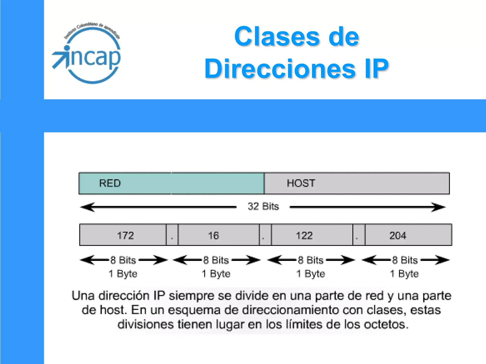

Las redes IP son un conjunto de protocolos y estándares utilizados para conectar dispositivos en una red de computadoras. Estas redes permiten la comunicación entre dispositivos a través de direcciones IP únicas, lo que las hace fundamentales en la infraestructura de Internet.
Se basan en la arquitectura de capas, divididas en siete capas principales: capa física, capa enlace de datos, capa de red, capa de transporte, capa de sesión, capa de presentación y capa de aplicación. Cada capa tiene un propósito específico en la comunicación y procesamiento de datos.
Utilizan direcciones IP para identificar y enrutar los datos entre los dispositivos de la red. Estas direcciones IP se representan como una secuencia de cuatro números separados por puntos, como 192.168.1.1. Cada dirección IP es única y se asigna a cada dispositivo en la red.
También se utilizan en una amplia variedad de aplicaciones, desde la comunicación en línea hasta el envío de correo electrónico y la transferencia de archivos. Además, las redes IP también se utilizan para proteger la integridad y confidencialidad de los datos transmitidos a través de la red.